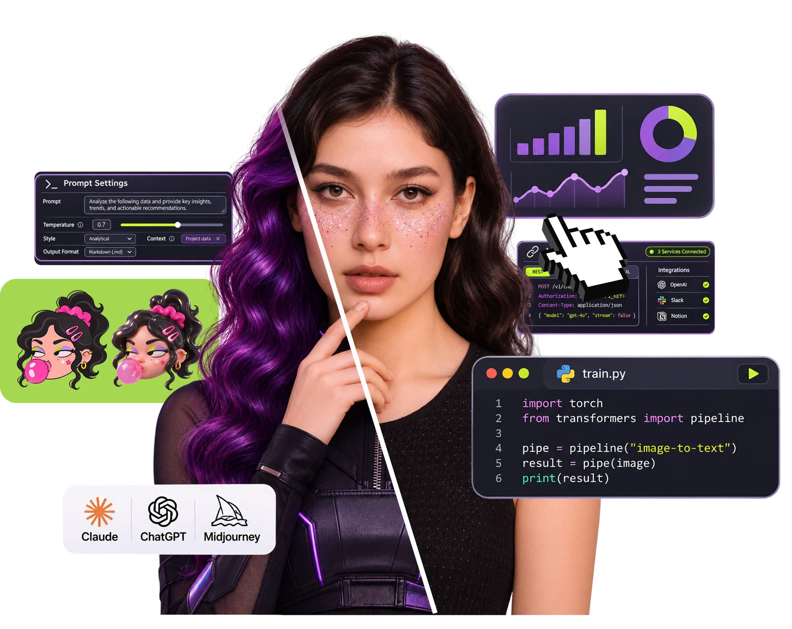
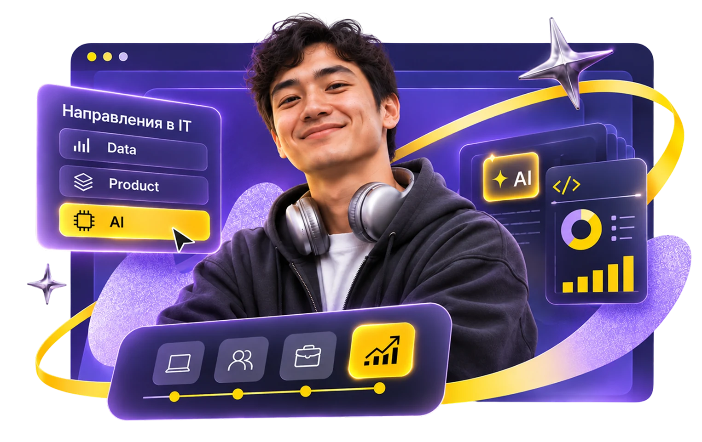
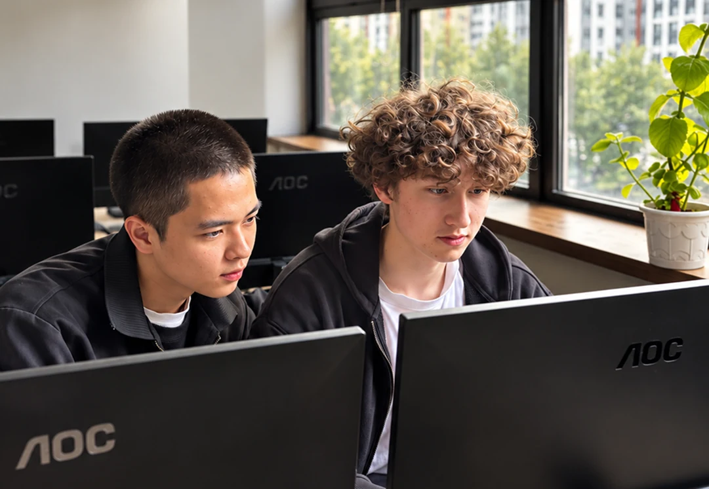
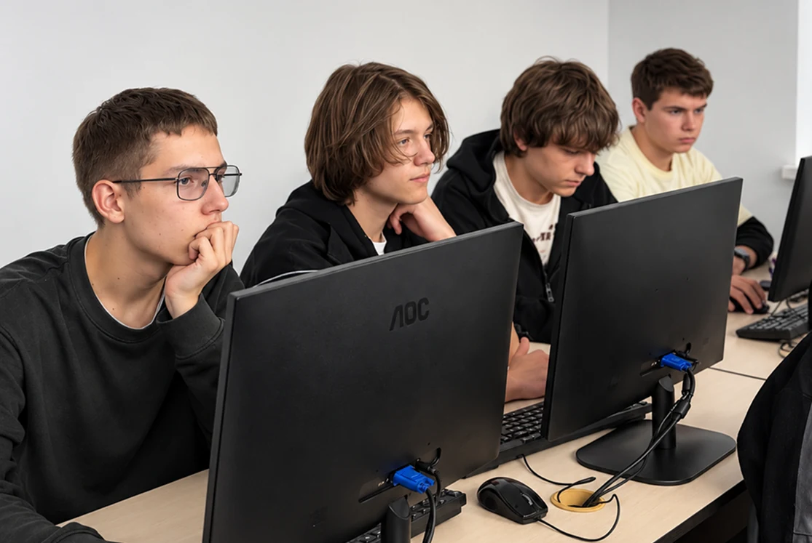
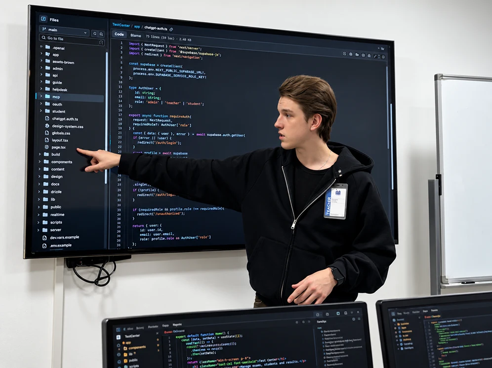
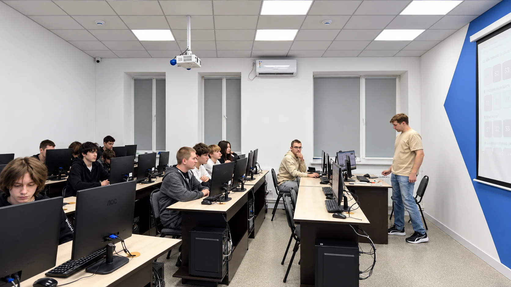
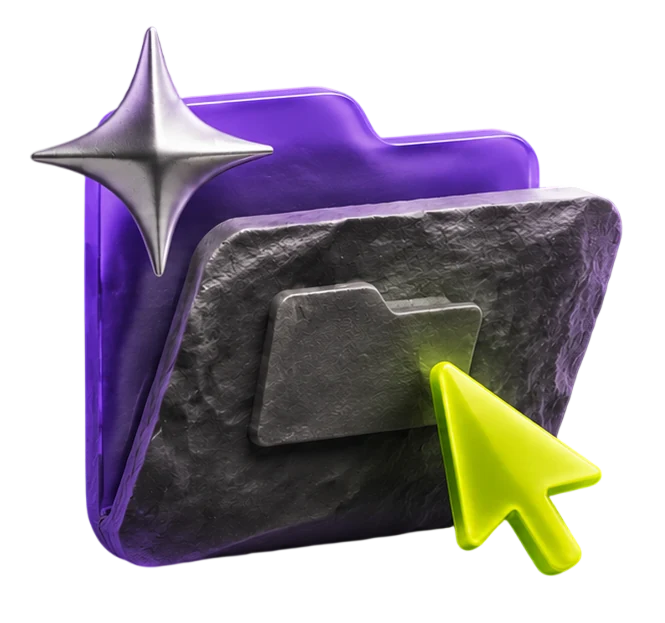
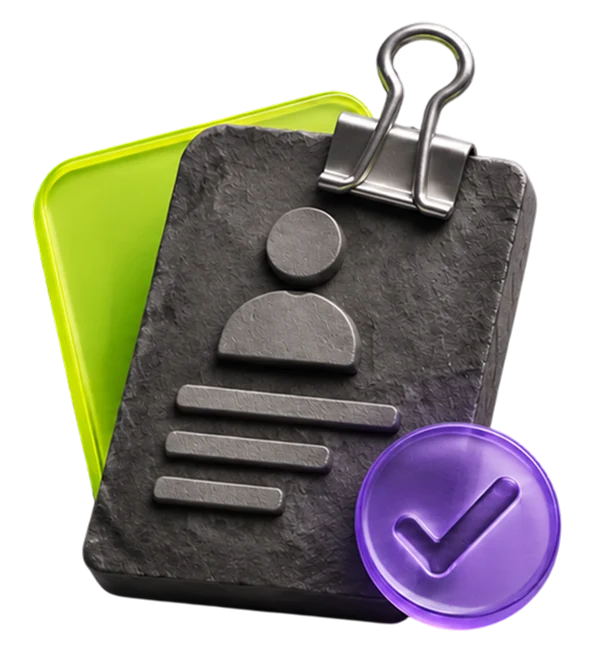
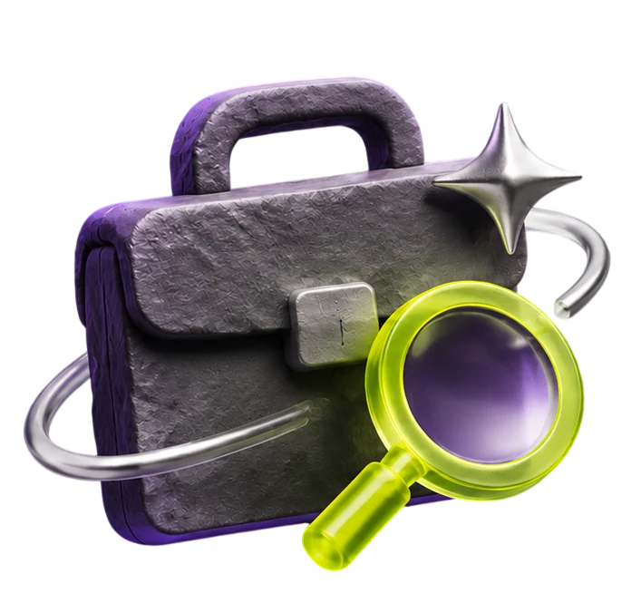

Искусственный интеллект с нуля до профи

70% практики – обучение на реальных проектах
Портфолио из проектов, которые оценят работодатели
Карьерная поддержка для успешного трудоустройства
Кто автор AI-контента?
Почему следует выбрать курс?
Легкий вход в сферу AI
Понятно объяснение принципов работы AI и постепенное погружение инструментов, которые уже сегодня используются в работе.
Практика с настоящими AI-инструментами
Работа с популярными сервисами, выполнение реальных задач и создание решений для портфолио.
Возможность роста в IT
Понимание, как применять AI в разных профессиях и развиваться в направлениях Data, Product или AI.

Кому подходит курс:

Новичкам и тем, кто хочет сменить профессию
Научитесь работать с AI-инструментами, автоматизировать задачи и создавать собственные решения. Освойте современные подходы к работе с данными и сможете начать карьеру в IT или использовать AI в своей сфере.

Тем, кто хочет повысить квалификацию
Углубляйте знания в использовании искусственного интеллекта, научитесь оптимизировать рабочие процессы и повышать эффективность благодаря AI. Расширите свои возможности как специалист и сможете брать более сложные задачи.
Заработок будет расти вместе с опытом
+14% По данным DOU, зарплаты в сфере растут каждый год
Junior AI-специалист
Первые коммерческие проекты, портфолио, работа в команде.
от $700+Middle AI-интегратор
1–2 года опыта.
Самостоятельная и уверенная работа над проектами
Senior AI‑консультант
3–4 года опыта.
Прокачанные навыки и большие кейсы в портфолио
Реальный опыт и много практики
Получите опыт, который обычно приобретают только на первой работе.

Учитесь на реальных задачах и проектах
- создаете AI-решения для текста, графики и видео
- работаете с современными AI-инструментами и сервисами
- автоматизируете маркетинговые и бизнес-процессы
- реализуете коммерческие проекты и кейсы для портфолио
В результате вы не просто изучаете AI, а создаете практические решения, готовые к использованию в реальных проектах.
Помощь преподавателей
Менторы по AI и автоматизации сопровождают вас на протяжении всего обучения: помогают разобраться с инструментами искусственного интеллекта, проверяют практические задания и консультируют при создании реальных проектов.

Платформа Mystat
Записи уроков, статистика успеваемости, задания и учебные материалы, поддержка – все, что нужно для вашего удобного и эффективного обучения.
Пробный урок
Познакомьтесь с Академией и узнайте о программе
Программа курса
Basic — 28 темPro — 16 тем
Старт в мире ИИ 7 тем
- Введение: что такое AI и как он работает
- ChatGPT, Claude, Gemini, Perplexity
- AI как ассистент в ежедневных задачах: составить список покупок, план путешествия
- Искусство запросов (Prompt Engineering). Как формулировать запрос | «Плохой» и «качественный» запрос. Цепные промпты. Техники уточнения, чтобы получить идеальный результат
- Поиск и анализ информации через AI
- AI в повседневных профессиях. Смоделировать использование AI в своей сфере (бухгалтер, учитель, маркетолог и т.п.). Prompt библиотека. Формирование собственного набора «топ-запросов»
- Работа с AI интерфейсами. Создать собственную «библиотеку инструментов» в Notion
Визуальный контент с AI 7 тем
- Введение в мир AI-изображений Leonardo AI
- Стили и жанры визуального AI
- Логотипы и брендинг. (Looka, Brandmark, Canva AI, Recraft)
- Работа с референсами и вариациями
- Инфографика и презентации. AI в бизнес-визуале (диаграммы, схемы, инфографика). Tome, Gamma, Canva AI
- Создание презентации и инфографики
- AI для соцсетей. Баннеры, обложки, превью для Reels/TikTok/YouTube
Видео и анимация с AI 7 тем
- Введение в мир AI-видео
- Контент для TikTok и Reels – видео формат новой реальности с ИИ
- Озвучка и субтитры (SunoAI, ElevenLabs, Play.ht, Descript)
- Дубляж короткого видео
- Анимация изображений. Анимирование фото, персонажей, картин (Kaiber, Pika)
- Короткий музыкальный клип из слайдов
- AI-видео для соцсетей. Монтаж и редактирование по AI. (Runway, CapCut AI, Veed.io)
AI для офиса и бизнеса 7 тем
- AI для работы с документами Создание и редактирование текстовых файлов, договоров, резюме, бизнес-листов
- AI для аналитики и отчетности. ChatGPT + Google Sheets/Excel: формулы, итоги, аналитика данных
- AI для управления проектами. Notion AI, ClickUp AI, Asana AI – создание планов, расписаний, таск-менеджмент
- AI для финансов. Автоматизация расчетов, прогнозирование расходов, создание бюджетов
- AI для работы с клиентами Создание шаблонов коммуникаций, CRM-ассистенты, чат-боты
- AI для презентаций и деловых встреч. Генерация презентаций (Tome, Gamma, Canva AI), оформление бизнес-отчетов
- Автоматизация бизнес-процессов без кода Zapier, Make, n8n – интеграции AI с почтой, мессенджерами, CRM
AI-креатив PRO: от инструмента к продукту 4 темы
- Комплексные AI-пайплайны для бренда
- PRO-видео и AI-спикеры для бизнеса
- Собственный москот и анимированный персонаж бренда
- Коммерческий AI-креатив-пакет
AI для бизнеса и управленческих решений 4 темы
- AI-аналитика для управленческих решений
- AI-продукты для обучения и коучинга
- AI-ассистент для команды или клиентского сервиса
- AI-решения для бизнеса
AI-агенты, автоматизации и интеграция 4 темы
- AI-агенты: от сценария к автономным действиям
- Telegram-боты с AI и бизнес-логикой
- Основы API и интеграций: как сервисы говорят между собой
- Полноценная автоматизация под реальную задачу
Монетизация и AI Хакатон 4 темы
- Где и как зарабатывают AI-специалист
- Упаковка AI-услуги: от скила к продукту
- Личный бренд AI-специалиста
- AI Хакатон
Сделаем так, чтобы вас хотели взять на работу

Создадим портфолио
Подскажем, как оформить работы, чтобы они выглядели хорошо и профессионально.

Составим резюме
Поможем составить резюме без воды, чтобы работодатель сразу видел ваши сильные стороны.

Подскажем, как быстро найти работу
Расскажем, где и как правильно на них подаваться.
После курса ваше резюме будет выглядеть так
Должность
AI-креатор
Навыки
- Использование AI как ассистента в ежедневных задачах
- Искусство запросов (Prompt Engineering)
- Поиск и анализ информации через AI
- Применение AI в профессиональной деятельности
- Работа с интерфейсами и платформами AI
- Создание текстового и коммуникационного контента по AI
- Генерация визуального контента и графики по AI
- AI для маркетинга, продаж и бизнес-процессов
- Программирование, интеграция и автоматизация с AI
Технологии
Chat GPTClaudeGeminiPerplexityLeonardo AIRecraftCanva AIFireflyTomeGammaRunwayCapCutVeedElevenLabsPlay.htD‑IDХейГенSynthesiaElaiScenarioInworldKaedimSunoMubertSoundrawZapierMaken8nNotionSheetsDocs
Попробуйте искусственный интеллект на пробном уроке
Познакомьтесь с Академией и узнайте о программе
Что вас ждёт:
- Знакомство с Академией и курсом «Искусственный интеллект с нуля до профи».
- Демонстрация AI-инструментов.
- Возможность узнать больше о программе и задать вопросы.
Где проходит пробный урок?
г. Ташкент, Мирабадский район, ул. Амир Темур, 15
Часто задаваемые вопросы
Как понять, подходит ли мне профессия искусственный интеллект с нуля к профи?
В первую очередь, это определяется вашим желанием. У нас еще не было ни одного студента, которому не удалось бы освоить новую профессию. Запишитесь на бесплатный визит, и мы протестируем ваши знания и при необходимости поможем подготовиться.
Кто может учиться, есть ли какие-либо ограничения по возрасту или знаниям?
На курсе может обучаться любой человек в возрасте от 15 лет, независимо от базового образования. Никаких экзаменов и тестов при поступлении сдавать не надо.
Какой документ/сертификат я получу после окончания Академии?
Диплом Академии IT STEP на русском и английском языке.
Если нет компьютера на дому, я могу заниматься в Академии ?
Да. В любое время. Филиалы Академии открыты с 9:00 до 20:00 и 7 дней в неделю.
Какие документы нужно иметь для поступления?
Для заключения договора вам понадобится паспорт заказчика от 18 лет, оплата в зависимости от формы обучения и выбранного графика платежей.
Можно ли учиться онлайн?
Если вас интересует дистанционное обучение, IT STEP Академия запустила онлайн-форму, где вы можете проходить обучение полностью онлайн.
В каком формате происходит обучение?
Занятия по 3 часа/3 раза в неделю в будни с опытными преподавателями.